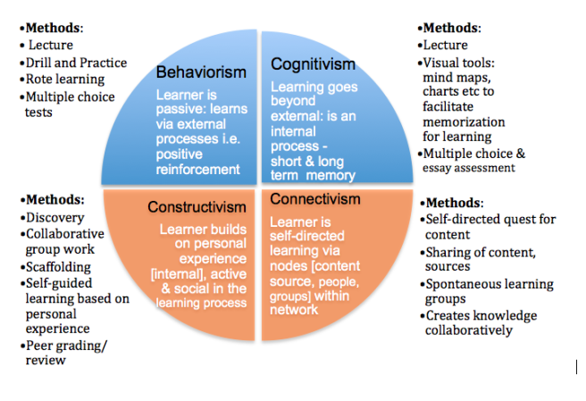

On Learning and Training
This chapter is providing context on training strategies, practical guidance in designing a course as well as an overview of pedagogical theories. It will focus on three key concepts in teaching and training:
Preparation
Execution
Reflection
Teaching and training is firstly about preparation before delivering a course. Preparation includes the choice of content, deciding on appropriate teaching methods and putting them into a sequence to maximise the effectiveness and impact of your training. Secondly, teaching is about delivering a course (i.e., how you act and interact with the participants). Even if you are feeling very confident on a particular topic, it is very advisable to avoid starting the delivery before having finished the preparation. Moreover, you may need to test your content, especially the practical exercises. Then, during the course delivery, you need a good portion of flexibility, because things rarely happen completely as you expect. Finally, teaching is also about evaluation and self-assessment once you have delivered a course. It is more than likely that you have to engage yourself in the same or a similar course several times, in particular if the evaluation shows that it was good.
To better prepare yourself for future events, you should reflect on what worked well and what did not work so well, and use this to iteratively define your preparations and delivery. Briefly said, there is a “before”, a “during” and an “after” class, i.e. activities in a cycle, similar to science. This chapter provides a practical guidance for the trainers on how to prepare and deliver a course to various audiences: what are the main obstacles one has to overcome and what are the main issues one needs to keep in mind when putting together a training.
Some reflections before you start
In the following part, we will focus mainly on the first aspect (preparation) and then give you guidance on how to plan and manage your course. To start with, we will speak about some theoretical issues which will provide you with an idea of what teaching and learning means and how teaching adults differs from teaching teenagers or children.
Training vs. Teaching
Teaching is more related to theoretical concepts than training, which is related to the practical application of knowledge (i.e., development of skills).
Teaching seeks to impart new knowledge while training equips the already knowledgeable with tools and techniques to develop a specific skill set.
Teaching is, usually, done within the context of education and academic environments, while training is associated with post-high school and/or postgraduate short and intensive courses.
Usually, teachers give feedback to their students, while trainers receive feedback from the learners.
However...
Training is the process of teaching or learning a skill or job, and trainers do actually teach something. Therefore, training can be considered as a broader activity that may encompass teaching.
Teaching may also include typical training activities and goals, such as practical sessions and demonstrations.
Despite the fact that teaching and training techniques may sometimes vary, the difference between training and teaching is not related to the process itself but to the focus, with training generally having a more specific focus than teaching.
In order to develop competencies as a professional, a person needs to attempt to understand the theoretical concepts as well as to have practical exposure. Therefore, teaching and training are equally important and complementary educational concepts.

Strategies
There are different theoretical approaches to learning and training, which are sometimes also influenced by the culture you live in. Some people like to talk and give lectures. Others like to listen, others don’t. Some exercises are simple and look for clear answers. Other exercises are centered around problems and focus on giving the participants time and space to reflect on them and find solutions. Finally, some trainings are designed to give the participants maximum freedom and let them be as creative as possible. Success in trainings like these is more difficult to evaluate.
Four well known learning theories are behaviorism, cognitivism, connectivism and constructivism. They describe different perspectives on how people learn.
This simplified diagram summarises their main characteristics in very practical terms:

Transcribed from:
The work done by the Software Carpentry also helps to understand learning processes: https://carpentries.github.io/instructor-training/
The Connected Curriculum Framework
The recent movement ‘Connected Curriculum Framework’ aims at modernizing learning approaches and adapting them to the 21st century learner. The general objective of the framework is to improve the relationships between student education and research practices by breaking down unnecessary divisions. The framework values rich dialogue, active inquiry, collaboration, and interactions between students and researchers as well as universities and wider communities. This carries interesting promises in the area of Open Science and Citizen Science, Crowdsourcing, etc. You can read the Connected Curriculum here: http://www.ucl.ac.uk/ucl-press/browse-books/a-connected-curriculum-for-higher-education
How is this relevant to you?
What is important to know, is that there are different approaches and you should not feel obliged to follow only one strategy, but rather decide at which point of your training you should apply which strategy to teach and evaluate.
In the end it is practice that matters and it may be helpful to check your content and practical exercises against one of the theoretical approaches in order to find out if they are appropriate at the given moment and for the target audience.

Expectations about a trainer
Everyone that comes to your training will come with expectations, conscious and unconscious ones. Among others (such as teaching methodology, content and prior knowledge) they will have specific expectations about the trainer.
Most learners will expect you to:
Be enthusiastic about the topics that they are teaching.
Have a general understanding of core scientific (or humanist) values, and recognise the role of ‘openness’ as an intrinsic, core element of this.
Understand the importance of factors such as research transparency and reproducibility, and the broader societal implications of these.
Show familiarity with the research process, including planning research, conducting research, producing research results, and communicating and publishing those results.
Have knowledge about the different types of research processes and outputs that can be shared, including data, code and software, papers, communication, workflows, grant applications, and data management plans.
Be aware of the policies, regulations and laws that could affect researchers when performing Open Science
Understand the pressures that result from institutional policies, or lack of them, that shape the way in which researchers handle data and results, from the acquisition stage to the sharing and dissemination stages.
Understand the expectations that are raised in the social fabric about the use of the resources and outcomes of scientific activities, such as its impacts in citizen science, the public understanding of science, the influence in the education providers, etc.
Be able to teach and have a profound knowledge in Open Science. (In fact, this is what this book is about.)
Provide links to online documents and resources that support newcomers.
Target audiences
A good way to get started with your Open Science training is to address audiences that have some idea and/or are interested in the topic. Generally, these people may be more open to the idea of Open Science. Starting your training with a motivated audience has several advantages:
Knowing that your audience really is interested in the topic may make you more comfortable diving into a new training area/topic. You may contemplate running a survey to assess this in advance.
A motivated audience probably will contribute to discussion and provide you with useful input on how to further develop your training curriculum.
Motivated audiences can become ambassadors of your training
Information you need to gather about your audience:
Maintaining an inclusive environment, and taking into consideration the diverse backgrounds of your potential attendees, is important for any successful training event. To learn how to make your workshop inclusive, see the Conference Planning Checklist by SPARC.
Whether the audience members know one another or not in advance will impact the group dynamic and the sorts of activities you might want to conduct.
Whether the participation is voluntary or not will influence their motivation.
The knowledge level of the audience regarding the planned discussion topics will affect the content and style of presentations.
Whether the audience is accustomed to a specific learning method might affect how the participants react to very different training format.
Audience size:
set a target audience size, based on the available space/capacity and available time for practical work..
the size of the audience will impact on how well they engage together and interact with the process.
if you want a larger audience, consider break-out groups, and the logistical requirements that might come with that.
Consider whether your event will be open to the public or limited to those affiliated with the host institution. A public event may help increase and diversity attendance, while limiting it can help you focus on particular topics. In addition, attendees from the same institution are more likely to already know each other.
Consider using video-lectures, as you might reach a broader audience. Though with a small group of people attending an on-site event it is often easier to maintain their attention, and to create and use the feeling of an authentic connection.
Consider what the best way is to approach different target audiences (meeting, face to face workshops, webinar, newsletter, social media, etc.)
With a heterogeneous audience, keep in mind the different stakeholders involved in order to address their different needs, knowledge and/or responsibilities:
funder, institution/employer, researcher (student, PhD student, researcher, project lead),
support (research office, library, IT)
commercial partners in a project
The outcome of the training should be that the trainees:
- have a better practical understanding of the key concepts and corresponding applications for Open Science.
- confidently use what was learned during the training, thus increasing their impact in their professional environment.
- become able to network with advocates from multiple disciplines,and act in a global Open Science initiative.
Teaching adults
Scholarly research is practised by adults, as such, the participants of any training in Open Science will most likely be adults, often with a first or second degree in higher education. It is therefore interesting to see, how far teaching children or teenagers (pedagogy) differs from teaching adults (andragogy). The Canadian Literacy and Learning Network did some interesting work on this difference and recapitulated it in seven principles:
Adults must want to learn. This means that the inner motivation and added values are decisive and it might be worth to know them before starting the course.
Adults will learn only what they feel they need to learn. Adults are practical in their approach to learning; they want to know, "How is this going to help me right now?" You should therefore be practical and direct.
Adults learn by doing. This is true for children too, but active and immediate participation matters more for adults.
Adult learning focuses on problems and the problems must be realistic. The participants will often come with a problem and it will be your task to discover gaps and try to close them.
Experience affects adult learning. Adults have more experience than children, either negative or positive. You can make use of this experience by avoiding negative associations.
Adults learn best in an informal situation. School-age youngsters usually have to follow a curriculum. Often, adults learn only what they feel they need to know. You should therefore try to involve your audience in the learning process. This may happen by making the environment relaxed, informal and inviting.
Adults want guidance. Adults want information that will help them improve their situation or solve problems, but they do not want to be told what to do, but rather choose options based on their individual needs.
Therefore, you will need to
provide the discovery points, tools and support where researchers will find them
prepare online documentation with clear, understandable, and up to date guidance
put together good usable (and discoverable) tools or templates to generate it.
In summary, adults have their interests focused on their own improvement and see training as a self-centered, capacity-building exercise. Adults like to be respected as such, and that their expectations are individually met, in an exhaustive way whenever possible.
Bloom’s Taxonomy
Learning outcomes are often the most specific way of establishing how a training instance is delivered, by tailoring whatever is needed so that the best part of the expected outcomes are met by the best part of the audience. Learners meet outcomes in a variety of ways, often amenable to a quantitative evaluation.
Specifying outcomes is part of handling training as a cognitive process. In 1956 Benjamin Bloom created a taxonomy of cognitive levels that has been modified through time. This is a very useful tool to build consistent and reusable learning outcomes in any subject matter. Transitions between non-contiguous levels of cognition is generally not acceptable. The taxonomy helps to detect potentially difficult situations where assessment can fail because the cognition level of the learning delivery is not the same as the cognition level of the assessment that is being used.

A present day version (since 2001) can also be found here] (https://thesecondprinciple.com/teaching-essentials/beyond-bloom-cognitive-taxonomy-revised/
Bloom’s Taxonomy is a classification method with six levels. Using Bloom’s Taxonomy is worth the effort because it represents a significant step towards a desire to build robust training and teaching. Together with Bloom’s Taxonomy you can find several types of design aids such as annotated terminologies, verbs to use or to avoid in course planning and building assessment questions, etc.
Learning objectives & learning outcomes
These two terms are often used interchangeably by the training community. Objectives, comprising aims or goals, and Outcomes, comprising tangible results, may overlap, but are not genuinely the same.
When designing training, you should think primarily of objectives, then list what outcomes you want your audience to reach for. Do not worry if they seem to overlap here and there, or if, as in most cases, an objective encloses one or more outcomes. Design all your practical exercises around specific outcomes.
Note: you should avoid using the abbreviation LO as it becomes ambiguous.
Here is an attempt to clarify this situation and remove ambiguities:
Learning objectives
Describe the goals and intentions of the instructor.
State the purpose and goals of the course.
Focus on content and skills important within the classroom or programme.
May describe what the instructors will do.
Should be specific and detailed.
Learning outcomes
Student Learning Outcomes catalog the overarching "products" of the course and are the evidence that the goals or objectives were achieved.
Learning Outcomes are statements that describe or list measurable and essential mastered content-knowledge—reflecting skills, competencies, and knowledge that students have achieved and can demonstrate upon successfully completing a course.
Outcomes express higher-level thinking skills that integrate course content and activities and can be observed as a behavior, skill, or discrete usable knowledge upon completing the course.
Outcomes are exactly what assessments are intended to show – specifically what the student will be able to do upon completing the course.
An assessable outcome can be displayed or observed and evaluated against criteria.
Outcomes are clear and measurable criteria for guiding the teaching, learning, and assessment process in the course.
(Adapted from http://provost.rpi.edu/learning-assessment/learning-outcomes/objectives-vs-outcomes)
For Open Science Learning Objectives, see this FOSTER document: https://doi.org/10.5281/zenodo.15603 (see page 13 & 14)
Example of a training objective:
- "To learn how to use assessment and feedback in training with maximised effectiveness"
Example of a training outcome:
- "Upon completing the course, the learner will be able to design a training exercise and a strategy to evaluate its effectiveness"

Motivation & demotivation
One of the key components in a training event is to make sure that the lack of confidence that the participants might have when being introduced to a new field (Open Science, in this instance) does not discourage them from pushing onwards. Even if some participants are generally familiar with the concepts presented in the training event, it is important to acknowledge when people are becoming confused. Acknowledging that their misunderstandings are valid is key to encouraging a growth mindset and motivating them to accept and endorse the Open Science practices.
There are several strategies that can be employed throughout the training event that can motivate participants. (Taken from the Carpentry Instructor Training, https://carpentries.github.io/instructor-training/08-motivation/)
Strategies to establish value
Connect the material to the participants’ interests or values.
Provide authentic, real-world tasks and case studies, ideally matched to the participants background and immediate interests.
Show relevance to the participants’ current academic lives.
Convey your own passion and enthusiasm for Open Science.
Strategies to build positive expectations
Ensure alignment of objectives, assessments, and instructional strategies.
Provide early success opportunities by applying the concepts in hands-on exercises and tutorials.
Strategies for self-efficacy
Provide participants with options and the ability to make choices.
Give participants an opportunity to reflect and make their own connections between Open Science and their particular work.
Practical guidance
You will find more information concerning the concrete planning and execution of a training on Open Science in the chapters on Organizational Aspects and the Examples and Practical Guidance.
Designing a course
The creation of your course will either be driven by planning on the course’s objectives or on its outcomes.
Planning based on objectives, rather than outcomes
SMART is an interesting technique for specifying goals / objectives that is also used in project management. SMART is an acronym that stands for five criteria: Simple – Measurable – Ambitious – Realistic – Timed.
Your goal is simple if it can be understood by a person not familiar with the topic. That is, you can explain to your students beforehand what they are going to learn. It is usually a good idea to present your goal at the beginning of a lesson. Simple means that the goal can be put into no more than one concise sentence.
Your goal is measurable if you can determine objectively whether the goal has been reached. Measurability prevents imprecise goals like "students understand Open Science", which is too broad and difficult to measure as there are many different components. Instead, use verbs that are actionable: identify, draw, name, explain, calculate etc. Verbs for good teaching goals have been categorized by the Bloom’s taxonomy of cognitive domains (clinton.edu/curriculumcommittee/listofmeasurableverbs.cxml). Measuring helps you and your students to assess or self-assess progress.
Your goal is ambitious if you challenge your students. Is there a clear benefit for them? Do you want the lesson to broaden their horizon? In which way does it give them an edge? Being ambitious means having an answer to the question: What will students learn that they could not by other means? If you feel a desire to make a stand and defend your viewpoint, it probably is ambitious.
Your goal is realistic if you sincerely believe your learning goal can be reached in the given timeframe. Being realistic involves homework: Do your students have the necessary background knowledge? What practical abilities do they need? What technical prerequisites are there? Are you prepared for unexpected questions? For instance, understanding all Creative Commons licenses in one hour may be realistic for one group, but out of reach for another.
Your goal is timed if there is a concrete timeframe which the goal is to be reached. First-time teachers often overextend their time budget. Setting time limits for your learning goals helps you to structure your lesson, recognize and react to unexpected delays. A good form of planning time is having a detailed schedule or lesson plan.
Adapted from SMART Goals, How to create objective, measurable project goals by Kristian Rother.
Planning based on outcomes, rather than objectives
Use reverse instructional design, known as Backward design, a technique for planning lessons that emphasizes outcomes:
Start from your learning objectives.
Decide what constitutes evidence that these objectives have been met (summative assessment, see Post-training Evaluation below).
Choose the best format and design content to prepare the audience for what they will have to do during the summative assessment.
Sort the content in order of increasing complexity and then provide the content and motivation they need to close the gap between what they know and what they need to know to complete the summative assessment. (Software Carpentry Instructor Training)
Backward design challenges "traditional" methods of curriculum planning. In traditional curriculum planning, a list of content that will be taught is created and/or selected.[4] In backward design, the educator starts with goals, creates or plans out assessments and finally makes lesson plans. Supporters of backward design liken the process to using a "road map".[5] In this case, the destination is chosen first and then the road map is used to plan the trip to the desired destination. In contrast, in traditional curriculum planning there is no formal destination identified before the journey begins.
The idea in backward design is to teach toward the "end point" or learning goals, which typically ensures that content taught remains focused and organized. This, in turn, aims at promoting better understanding of the content or processes to be taught to students. The trainer is able to focus on addressing what the students need to learn, what data can be collected to show that the students have learned the desired outcomes (or learning standards) and how to ensure the students will learn.
Content
Content collection
Before starting to teach you will have to collect and prepare content. Content is nowadays available en masse, and the question is less about finding or creating content than rather about finding appropriate content or making the discovered content appropriate to the needs and capabilities of your target audience.
Please check the chapter on Examples and Practical Guidance which will contain helpful information on how to adopt, adapt and develop content.
Content reduction
One of the biggest challenges in designing training courses is the reduction of content to the training format. If you have only two hours, you need to provide the most important information on a topic during this time. As a trainer, however, you usually have much more knowledge that you would like to pass on. Try to reduce the content to the most important key points. What is really necessary to know and what are only details or marginal topics? Set thematic priorities, be transparent about omissions and inform your participants about these.
And try to keep enough time for open questions, discussions, sharing experience among participants. It will help you to get the "right" questions. Usually much more basic, than you expected or more detailed and specific than you planned.
Starting the training
Introductions
At the beginning of the event, speakers should clearly and succinctly introduce themselves and their areas of expertise. Why should the attendees listen to you? What experience and skills do you have that are relevant to them? You should then give a general presentation of objectives, content, and outcomes for the training event - what participants will learn, and why. Projecting confidence as a figure is key here in order to establish trust.
Depending on the size of your audience, the amount of time available, and the degree to which audience interaction will be key to successful training outcomes, you may wish to begin by having participants introduce themselves briefly (although this is probably not recommended if the group is larger than 15-20 participants). This might be a good time to collect thoughts from participants on their own expectations and levels of experience (if not done before, e.g. with an online-questionnaire), and to gauge to what extent these match the intended outcomes and your overview of the intended or target audience for the training. If there is a large mismatch, now would be the time to consider ways to spontaneously adapt the programme. For example, if participants are more knowledgeable or experienced than anticipated, you may wish to move more quickly over the basics of particular areas of Open Science in order to spend more time on interactive discussion in which the participants’ own questions and experiences are brought to the forefront.
Know that there is no absolute need to immediately adapt the content, just be clear by letting all participants know what will be covered or not.
Once more, the information delivered by Software Carpentry might be helpful to create the right ambiance.

Ice-breaker
In order to energize audience members and help them get to know the trainers and each other, many training sessions begin with an ice-breaker exercise. Creating a warm, welcoming, friendly and positive learning environment should enable attendees to better participate and learn, and help them to feel more comfortable.
While icebreaker games can help create a positive atmosphere, a poorly chosen icebreaker can do the opposite, making people feel nervous or uncomfortable. You should carefully consider your attendees and the potential group dynamics when choosing an icebreaker. People should not be made to feel embarrassed, or forced to reveal personal information they do not wish to share. Groups will differ in important ways - whether attendees are of different ages or statuses within an organization, from different cultural levels, or of differing levels of educational attainments, will all affect the amount of common ground that might already exist between them. Try to keep such exercises related to the intended learning outcomes. Please refer to the Further Reading section for examples.
During the training
Define the intended outcomes of the training and always give orientation to your trainees:
Where are we?
Where do we want to go?
What will we cover?
Establish a balanced change of pure talks about the content to deliver (max. 20 minutes) and activity sessions to work with the content (Klaus Döring, 2008).
Always make the learners' voices sound as soon as possible or, in other words, go for active learning!
Active Learning
Active Learning is a process whereby learners are actively engaged in the learning process, rather than "passively" absorbing lectures. Active learning involves reading, writing, discussion, and engagement in solving problems, analysis, synthesis, and evaluation. Active learning often involves cooperative learning with other attendees.
Using active learning principles and implementation in training is, in general, a good idea. You are the second best judge for the benefits. Do remember that the first judge is the participant.
Active learning helps to bypass diversity in learning styles and other difficulties with audiences. While more efficient in reaching outcomes of higher levels, active learning also addresses cognition issues related to the nature of the content and the way to present it, as shown in the following diagram, commonly found in several textbooks and online resources, and known as the Cone of Learning. Active learning is best utilised at the top levels of Bloom’s Taxonomy (Analize, Define, Create, Evaluate), and that also corresponds to the best strata of memorization: what you say, write or do - the bottom half of the Cone of Learning. Cognition issues arise with more ease when content spans several of these levels at a time and fails to address the intermediate levels as well. Checking your content against the Cone of Learning is an easy way of detecting these potential miss-outs while you deliver training. Likewise it allows you to decide to use more visual aids where you expect that the need for memorization is higher. So, when your audience gets behind you may use this technique to diagnose, try to locate the causes and pick the most effective remediation.
Gamification
The foundations of the methodology in Active Learning lie in modern learning theories (partly in Constructivism and some Connectivism) and add learning engagement techniques to break barriers and flatten as many obstacles as possible. For example, gamifying a learning instance can move learners away from passive acquisition of content to full engagement, leading to the repositioning of the learner as someone who steps back and observes the learning process and how it works. An example of gamification in training is given here: Key Terms, a learning game for conceptual consolidation.. An additional example can be found in CURATE: The Digital Curator Game.
Inclusive engagement
How to engage quiet participants? A good starting point might be to ask a question and wait at least 30 seconds for answers (Mary Budd Rowe, 1986). The result will be that more people engage in the discussion, the answers are of better quality and slow learners get a chance to answer.
Another method of achieving inclusive engagement is progressive stacking. A moderator chooses who speaks next from those participants who wish to speak and have not yet spoken, as usual. In addition, underrepresented voices, including underrepresented gender and racial identities, are chosen to speak first.
During discussions (in larger groups), you should avoid standing microphones with first-come-first-speak engagement, as it discourages inclusive engagement and encourages monologuing. Use a wireless microphone instead or raised hands to ensure that who speaks next can be selected by the moderator. The larger the group, the bigger the need for a moderator who monitors who is speaking and who is not. It will also be the moderator’s task to choose who speaks next from those participants who wish to speak, but have not yet spoken to avoid the workshop engagement to be dominated by just a few participants.
General recommendations
Stay connected! Always try to keep the contact with the group, check your pace and those of the others.
Be careful not to overload the participants with too much and/or too difficult content.
Be open for feedback at any time but avoid or actively break-up never-ending discussions.
Breaks: Always give enough space for breaks. The longer your course, the longer and more often your breaks.
Prepare short, middle and long versions of your exercises to become flexible if the discussions are more or less intensive.
Be prepared for difficult students and consult some troubleshooting guidance before the course.
(You may find some ideas in the MozFest2017 Facilitator Guide). You should in any case have an idea of what you do when a parallel conversation emerges or what to do when somebody is constantly rude or inattentive etc. Know that there are verbal and non-verbal ways to tackle this.
Wrap-Up / Meta View: At the end of the training it might be worth to tell your participants what you did and why you did it. This will also make the evaluation easier.
Enjoy the session yourself.
Instant feedback
At the end of each module, request feedback from participants in the form of a one-up/one-down (i.e. state one thing that was useful/good in the module and one thing that was unclear/could be improved). It can also be more graded / scaled. Here is an example feedback with 6 levels.
Another way for getting instant feedback, especially at predefined points, is through continuous polls. As an example, Slack can be employed to provide anonymous feedback on the pace, by giving the option for members of a channel to change their choice on a poll at any given time. Feedback counts should be shown to the participants. Showing totals or graphs can act as an incentive. Online, cloud based tools generate more engagement, especially because the dependence on devices such as clickers is disappearing. Learners can use internet connected mobile devices and feel empowered. Examples of this are abundant. You should test the methods before you use them with a real audience, and start with the systems that have smoother familiarisation steps, such as Socrative and Learning Catalytics, Polleverywhere, Directpoll.
Some more instant feedback strategies can be found under teachthought.com
Training evaluation
Successful Open Science training also needs evaluation phases. Especially when starting a course, it is useful to look at trainees feedback. An evaluation can provide you with valuable insights on your methods and content. Continuous evaluation and consideration of the feedback improves the quality of the training and the trainer's performance.
Types of feedback
There are different ways to get feedback from your participants:
Classic forms of evaluation
Use an evaluation form in which you ask the participants for feedback on you as a teacher.
Get interim statements during the course to check, if the course meets expectations. This gives you the opportunity to make adjustments before going on.
Verbal feedback
- Ask the trainees for a short summary of their course experience.
Self-Evaluation
- Make your own evaluation, what went well, what went wrong?
Long term feedback
- 6 months later, questions about plastic changes in behaviour, more generally about modifications in the attitude and its potential effects.
Peer to peer feedback
- Colleagues will help you with their experience to prepare your course, eventually attend themselves the course and exchange with you afterwards and will give you their feedback.
Metrics for training efficiency
In order to evaluate a course you should need to establish, first, what you want your learners to be familiar with, know, analyse critically or be able to explain . Why are you doing the course? Which goals do you want to achieve? And once the course has finished you should check if you reached those goals. There are different criteria on how to measure the success and efficiency of your course (Kirkpatrick & Kirkpatrick, 1994):
Reaction (meeting expectations): Are the trainees satisfied with the course? Have the participants reached their learning goals? Were the expectations realistic? How did they react to the course? Was there a clear structure or a common thread?
Learning: Did the attendees learn something new? Is it helpful in their current situation? Did they understand everything? Can they assign suggested tools/platforms to the respective Open Science practices? Do they meet the pre-specified learning objectives?
Behaviour: Will they change their way of conducting research? What will they do with their acquired knowledge? Will they recommend the training/content to others?
Results: which outcomes, when met, have a more positive impact towards the objectives? Which were the ones that brought more benefits?
Kirkpatrick’s Training Evaluation Technique
Kirkpatrick's Four-Level Training Evaluation Model is an standardised way to analyse the effectiveness and impact of your training.
Exercises
Check the learning outcome with gap texts and quizzes.
Run a simple exercise at the start and same exercise at the end. Then see if opinions have changed.
Keywords: Prepare paper slips with different key aspects of Open Science. Divide the trainees into groups (at least 3 people) and let each of them explain 2-3 keywords to each other.
Give the participants a printout of the general structure for the scientific method, and ask them to assign Open Science tools and methods that can be applied to each of them.
Depending on time, you can also ask them to create an imaginary/simple research scenario and go ahead in establishing the Open Science protocols for it.
Rework your course
You will have had your own expectations before teaching the course and the experience of having done so will show you that things do not always work the way you planned. You should not be too disappointed, because a first time yield for all outcomes is almost impossible, but rather take the end of the course as a starting point to rework your material and rethink some of your methods and practical exercises.
Be aware that it might even take you three attempts until you will have the feeling that your course has the format it needs and will satisfy both the attendees as well as you as the instructor.
Learning outcomes of this chapter
After going through this chapter you should be able to respond to requests to plan and deliver training in Open Science to specific audiences.
Exercise
Consider the following hypothetical situation: You have been invited to train principal investigators at an engineering school. The training will be about the management of datasets that are shared between research groups in the school and their colleagues in Canada and New Zealand, in an Open Science context.
In one paragraph describe the design strategy for your training session, in major steps, for example what would you plan to do before, during and after your training session
List three questions that you are allowed to ask to characterise your audience
List three learning objectives
List three expected learning outcomes
List three actions that you can use to break the ice and get your audience engaged
List three questions that you would ask to check what the participants have learned
List three questions that you would ask to check if the participants enjoyed the session.
Be ready to react to genuine and spontaneously created wordcloud (sli.do or some other tool) : don’t be afraid to co-work with your audience, learn to play with what you know (and assume you also have to right for some perplexity)
Similar exercises can be applied to training different audiences, for which you may consider the same way of testing your knowledge.
Further reading
About Bloom's Taxonomy:
- Davis (2014). Using Bloom’s Taxonomy to Write Learning Outcomes. pearsoened.com
- Clinton Community College (1966-2017). List of Measurable Verbs Used to Assess Learning Outcomes. clinton.edu
Resources/Exercises for ice-breakers
- Mindtools. Ice Breakers. Easing Group Contribution. mindtools.com
- Students as Partners, Teaching, Learning and Support Office. Peer Support Icebreakers. documents.manchester.ac.uk
- The balance careers. The 10 Best Icebreaker Activities for Any Work Event. Activities for Meetings, Training, and Team Building Sessions. thebalance.com
References
Ambrose, Bridges, DiPietro, Lovett, Norman and Mayer. How learning works. Highlights summarized by Brent and Felder. Seven research-based principles for smart teaching"; ISBN: 978-0-470-48410-4.
Dale (1969). Audio-Visual Methods in Teaching, 3rd ed., Holt, Rinehart & Winston, New York, p.10.
Döring (2008). Handbuch Lehren und Trainieren in der Weiterbildung. Beltz Verlag (Weinheim, Basel).
Fung (2017). A Connected Curriculum for Higher Education. UCL Press. ucl.ac.uk
Felder and Brent (n.y.). Active learning. An introduction. PDF
Kirkpatrick and Kirkpatrick (1994). Evaluating Training Programs, Berrett-Koehler Publishers.
Mazur (2014). Peer Instruction for Active Learning. Serious science. video
Owen Wilson (2018). The Flipped Classroom. thesecondprinciple.com
Prince (2004). Does Active Learning Work? A Review of the Research. PDF
Rowe (1986). Wait Time: Slowing Down May Be A Way of Speeding Up! Journal of Teacher Education, 37(1), 43–50. doi.org/10.1177/002248718603700110
Siemens (2006). Knowing Knowledge. PDF
For a deeper understanding of the matter:
- Knowles, Holton, and Swanson (2011). The Adult Learner: The Definitive Classic in Adult Education and Human Resource Development. Oxford: Butterworth-Heinemann.